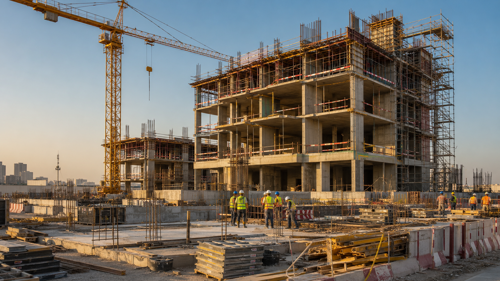
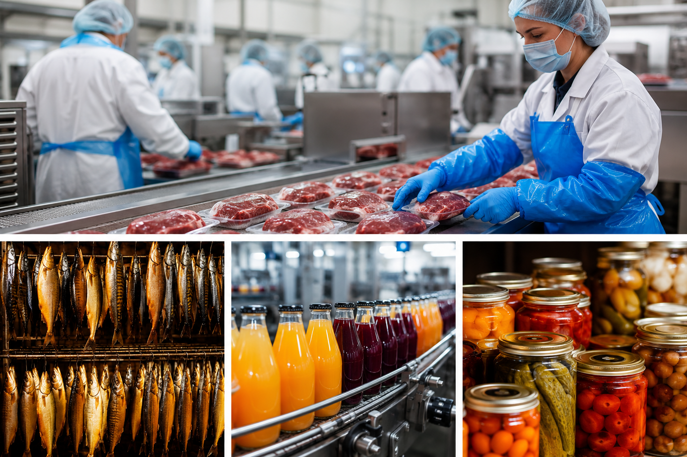
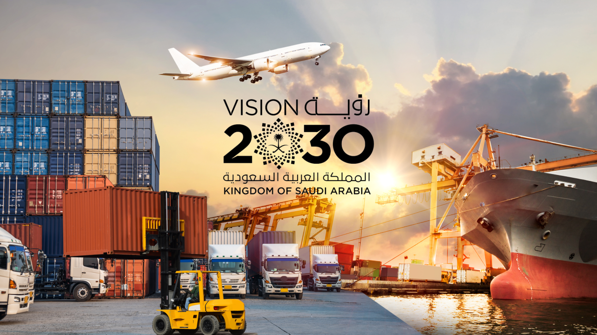
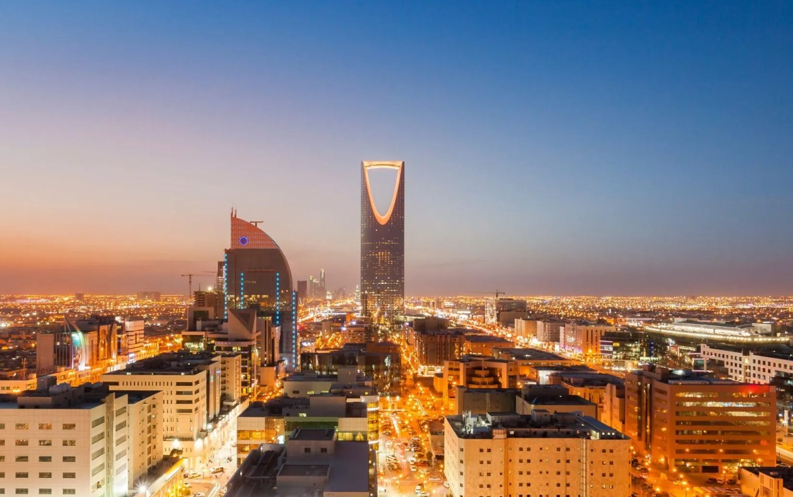

Layl Azlam Establishment operates five distinct business divisions under one commercial registration: Construction & Contracting delivers new-build, renovation, and demolition work; Manpower Supply provides skilled and general labour alongside our construction projects; Food Processing & Preservation covers meat, fish, and juice production; Transport & Logistics moves people, freight, and livestock across the region; and Hospitality & Accommodation offers hotel stays and serviced apartments for extended visits.

Founding Division
Construction & Contracting
The division Layl Azlam was founded on — full-lifecycle residential construction work in and around Al Jubail.
- General construction of residential buildings — new-build residential projects from foundation to completion.
- Renovation of residential and non-residential buildings — repair, upgrade, and refurbishment.
- Demolition and removal of buildings — safe teardown and site clearance.
Support Division
Manpower Supply
Staffing support that pairs closely with our construction and contracting work.
- Skilled tradespeople — masons, steel fixers, carpenters, finishing crews.
- General labour — site cleanup, material handling, support staffing.
- Supervisory staff — site foremen and coordinators for short or long-term needs.
Manpower Supply is offered as a support service alongside the establishment's registered construction activities.

Division Three
Food Processing & Preservation
Preservation and preparation work covering meat, fish, and fruit products.
- Preservation and preparation of meat and meat products — drying, canning.
- Preservation of fish and fish products — drying, smoking, salting.
- Production of fruit juices.

Division Four
Transport & Logistics
Moving people, freight, and livestock reliably across the Eastern Province.
- Public transport by buses within cities
- Airport transport
- Land freight transport
- Livestock transport
- Car transport
- Light transport services

Division Five
Hospitality & Accommodation
Comfortable stays for both short visits and extended assignments in Al Jubail.
- Hotel operations
- Serviced apartments for extended stays
Get Started
Looking To Work With Us?
Whichever division fits your need, reach out and we'll respond directly.
Contact Us